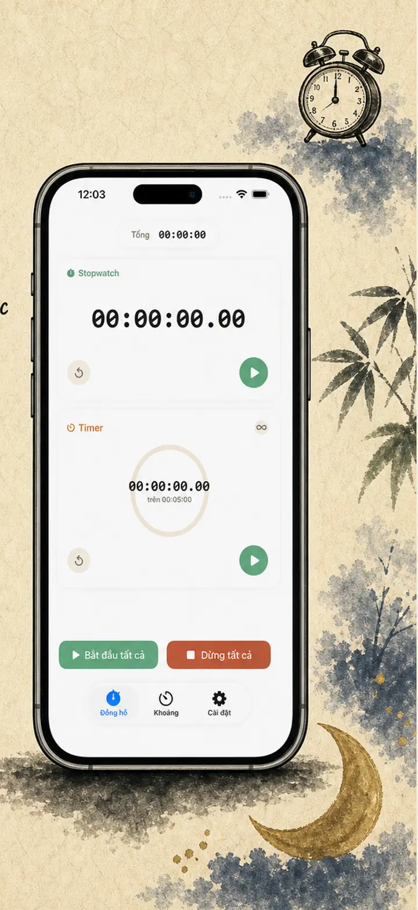
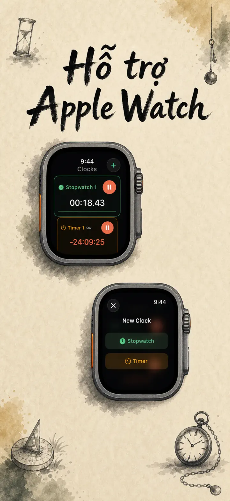
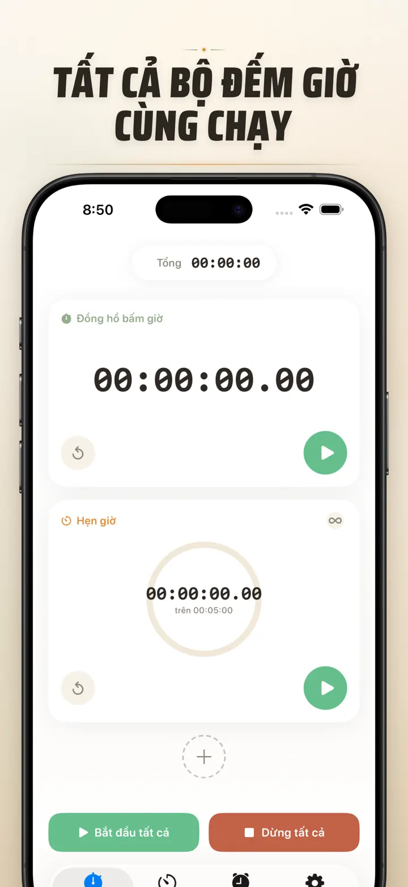
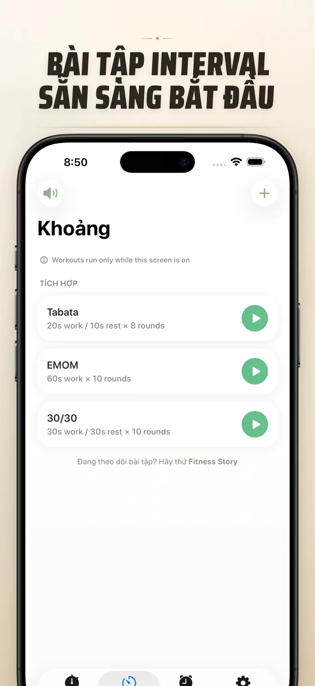
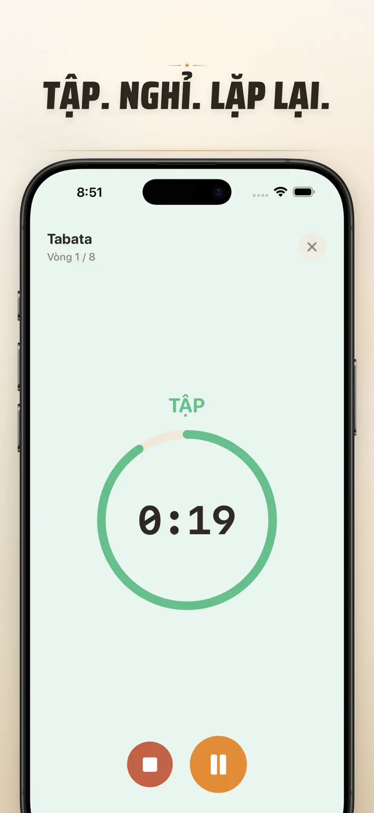
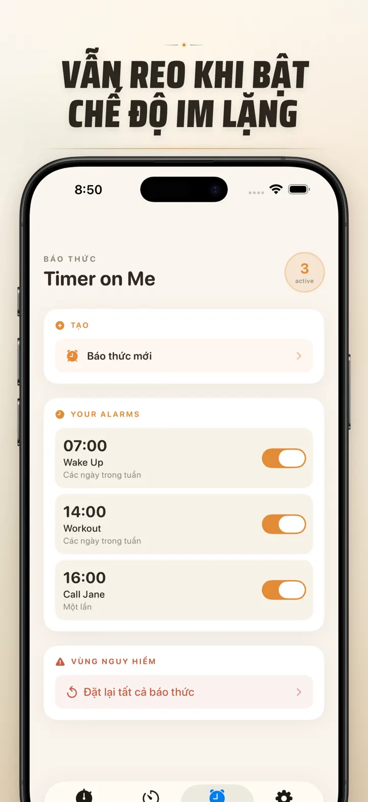

Timer on Me
Timer, báo thức, bấm giờ, HIIT
Nay có báo thức theo ngày: đặt báo thức một lần cho bất kỳ ngày giờ nào, cùng với báo thức định kỳ, 50 bộ hẹn giờ cùng lúc, HIIT & Tabata và Apple Watch.
Tải xuống từ App StoreGiới thiệu ứng dụng
Timer on Me là đa timer và đồng hồ bấm giờ cho iPhone, iPad và Apple Watch. Tới 50 timer độc lập cùng lúc, bài tập interval chính xác và báo thức thực sự reo — ngay cả khi iPhone khóa hay ứng dụng đã đóng.
BÁO THỨC
- Báo thức buổi sáng và nhắc việc với nhãn và lịch lặp theo ngày trong tuần tùy chỉnh
- Dùng AlarmKit — reo cả khi iPhone khóa hay Timer on Me đã đóng
- Tùy chọn thời gian báo lại (3 / 5 / 9 / 15 / 30 phút) hoặc tắt báo lại
- Chọn từ âm thanh có sẵn hoặc nhập âm của riêng bạn
- Bật/tắt nhanh chỉ một chạm từ tab Báo thức riêng
TẬP LUYỆN VÀ INTERVAL
- Sẵn preset Tabata, EMOM và 30/30 — hai chạm là chạy
- Trình chỉnh interval riêng: làm, nghỉ và vòng theo phút và giây
- Chế độ tập toàn màn hình, đổi màu theo từng pha và lựa chọn im lặng
- Tạm dừng, bỏ qua và tiếp tục giữa buổi tập mà không mất tiến độ
APPLE WATCH
- Ứng dụng watchOS gốc thực thụ, không phải phản chiếu từ điện thoại
- Nhiều đồng hồ bấm giờ và timer chạy cùng lúc trên cổ tay
- Đồng hồ bấm giờ chính xác tới một phần trăm giây
- Complication mặt đồng hồ riêng để mở nhanh bằng một chạm
- Hoạt động độc lập, ngay cả khi không có iPhone bên cạnh
50 TIMER CÙNG LÚC
- Tới 50 timer và đồng hồ bấm giờ độc lập trong một phiên
- Bắt đầu, dừng và đặt lại riêng lẻ hoặc theo nhóm
- Tự lặp lại cho các vòng liên tục
- Timer chạy tiếp sau 0 để ghi nhận thời gian dư
- Thanh tiến trình có màu: vàng tại 50%, đỏ tại 10%
- Kéo để sắp xếp, đặt tên theo ý bạn
CẢNH BÁO ĐÁNG TIN
- AlarmKit: báo thức reo ngay cả khi iPhone khóa hoặc ứng dụng đã đóng
- Dynamic Island và Live Activity — theo dõi tiến độ trong nháy mắt
- Widget màn hình chính: nhỏ, vừa, lớn
- Âm thanh tích hợp: chuông, tiếng chim, điện thoại cổ điển
- Chạm để nghe trước khi chọn
- Chế độ "Giữ màn hình sáng" cho buổi tập dài
TÙY CHỈNH VÀ CHIA SẺ
- Hiện hoặc ẩn phần thập phân, tổng và phần trăm
- Lưu và ghi đè preset, gọi lại bằng một chạm
- Xuất ra CSV, JSON hoặc văn bản thuần
- Chia sẻ với đồng nghiệp, học viên hoặc huấn luyện viên
CHO iPhone, iPad VÀ APPLE WATCH
- Bố cục thích ứng với mọi kích thước màn hình
- Split View trên iPad
- 34 ngôn ngữ
PHÙ HỢP CHO
- HIIT, Tabata, CrossFit và tập vòng
- Vòng boxing, muay thai và võ thuật
- Pomodoro, ôn thi THPT Quốc gia và tập trung học tập
- Pha cà phê phin, trà, trứng luộc, phở, bún bò và thời gian lò nướng
- Yoga, pilates, thiền và bài tập thở
- Tập dượt thuyết trình và luyện nhạc cụ
- Lớp học, workshop và hoạt động nhóm
- Trò chơi bàn cờ và buổi tụ họp bạn bè
Tải Timer on Me và nắm trọn từng phút — tại phòng gym, công ty hay ở nhà.
Chính sách quyền riêng tư: https://masawata.net/privacy-policy.html Điều khoản dịch vụ: https://www.apple.com/legal/internet-services/itunes/dev/stdeula/
Ảnh chụp màn hình






Timer on Me
Nay có báo thức theo ngày: đặt báo thức một lần cho bất kỳ ngày giờ nào, cùng với báo thức định kỳ, 50 bộ hẹn giờ cùng lúc, HIIT & Tabata và Apple Watch.
Tải xuống từ App Store